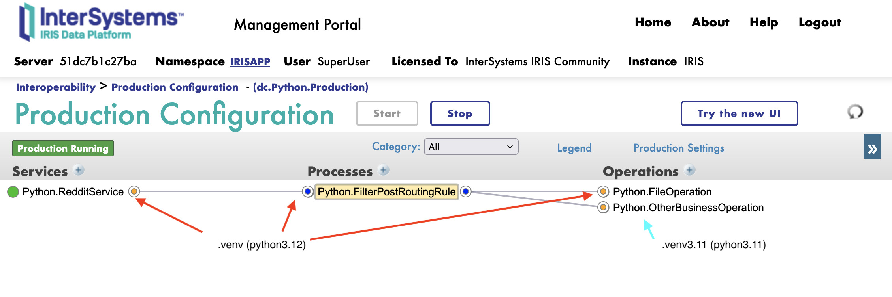
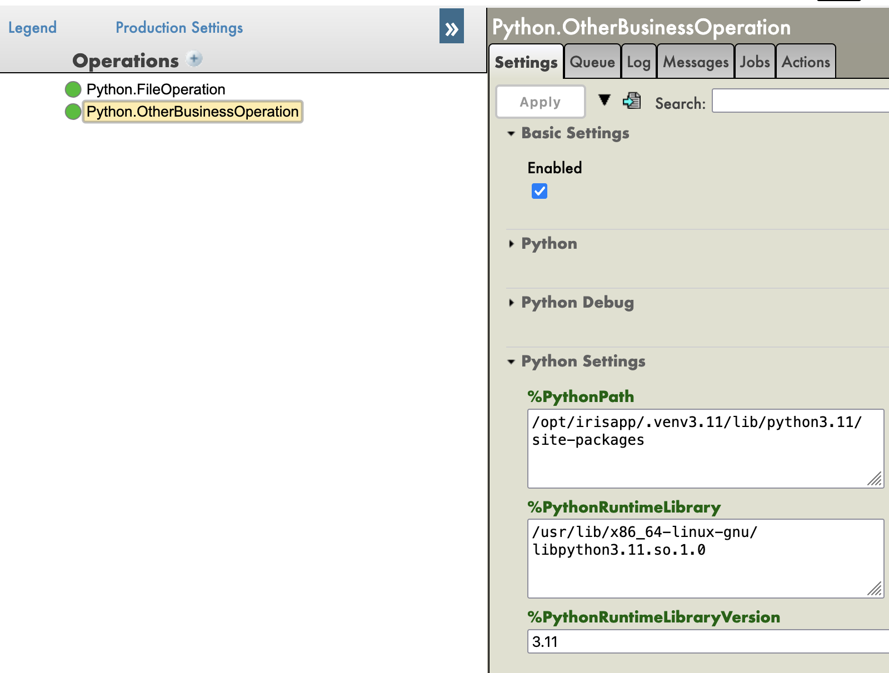
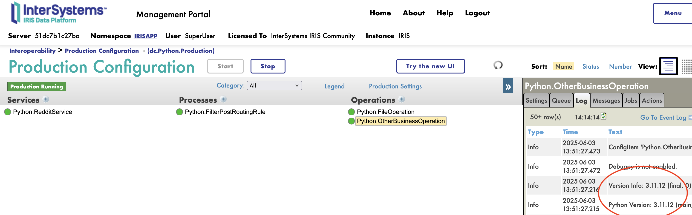
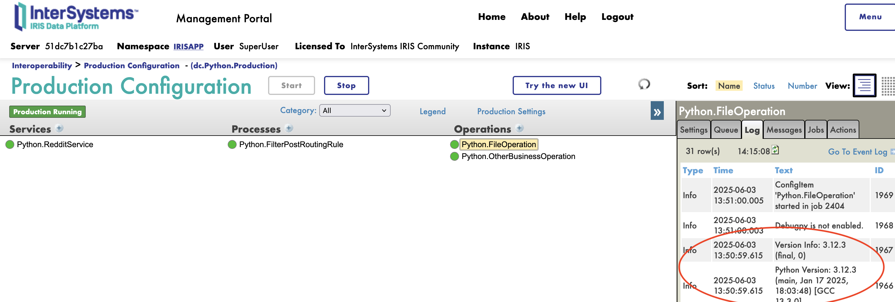
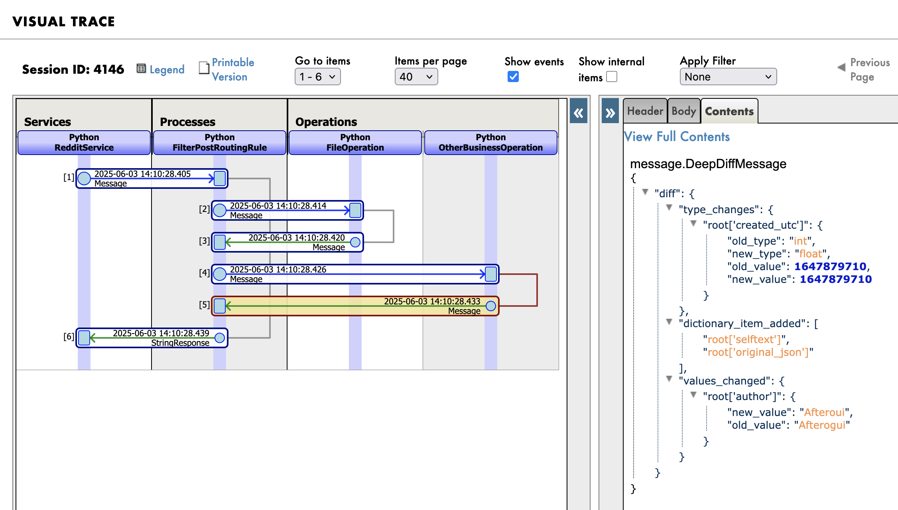

venv support

How to set up a virtual environment for the Iris IOP framework.
! Note: This is a proof-of-concept and not a production-ready solution.
As this is a proof-of-concept, a toggle is available and called %Venv if you want to enable or disable the virtual environment support.
How everything is set up
The source code is migrated to IRIS thanks to the iop --migrate command.
Both virtual environments are created using the vanilla python -m venv command.
The iop command is used to run the source code in the virtual environments.
# activate the secondary virtual environment
source /opt/irisapp/.venv3.11/bin/activate
# migrate the source code
iop -m /irisdev/app/src/python/other/settings.py
# deactivate the secondary virtual environment
deactivate
# activate the main virtual environment
source /opt/irisapp/.venv/bin/activate
# migrate the source code
iop -m /irisdev/app/src/python/reddit/settings.py
# start production
iop --start dc.Python.Production
! Note: if deploying code in a non-venv environment, the parameters
%PythonPathwon't be set, and the code will run in the default python environment.
Virtual Manual configuration
The parameters :
%PythonPath: the path to the python lib in the virtual environment%PythonRuntimeLibraryVersion: the version of python used in the virtual environment%PythonRuntimeLibrary: the path to the lib python in the virtual environment

Full example
See the full example in the iris-venv-demo.
How it works
As the interoperability framework works with independent processes, it is manageable to run each process in its own virtual environment.
This allows for easy management of dependencies and versions.
For this demo, we will be using two virtual environments:
.venv- This is the main virtual environment that will run source code in
./src/python/reddit - It will use its own dependencies in
./src/python/reddit/requirements.txtrequestsdataclasses-json
- The version of python will be
3.12 - The venv folder will be in
/opt/irisapp/.venv/
- This is the main virtual environment that will run source code in
.venv3.11- This is a secondary virtual environment that will run source code in
./src/python/other - It will use its own dependencies in
./src/python/other/requirements.txtdeepdiff
- The version of python will be
3.11 - The venv folder will be in
/opt/irisapp/.venv3.11/
- This is a secondary virtual environment that will run source code in
Screenshots
  